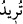
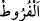
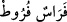

ve onu (âdetâ) azarlayarak şöyle buyurmaktadır: “Bize karşı nefsiyle, rûhuyla ve
kalbiyle sabredenlere sen de sabret. Onlar sabah akşam bizim huzûrumuzdan
ayrılmazlar. Kim bizim huzûrumuzdan ayrılmazsa, artık senin de ona sabretmen ve
ondan ayrılmaman gerekir. Bir an bile gözünü benden ayırmayandan, senin de gözünü
ondan ayırmaman doğru olan bir gerçektir. Bu onların dünyadaki mükâfâtıdır.
Burada ziynetin/süsün dünya hayatına izâfe edilmesi, onu küçümsemek ve ondan
nefret ettirmek içindir.
Kâşifî der ki: “Bilmen gerekir ki Peygamber Efendimiz asla dünyaya ve ziynetine
meyletmemiştir. Belki âyetin mânâsı şöyledir: ‘Dünyanın ziynetine meyleden kimse gibi
amel eyleme.’ Dünyaya meyleden kimse ise fakirlerden yüz çevirir ve zenginlere ikbâl
gösterir.”
Zübdetü’t-tefâsîr’de şöyle der: “Âyetteki “__WORD__ türîdü” lafzı, istikbâle yöneltilmiş bir
hâldir. Yoksa Nebî (a.s.)’ın dünya ziynetini istediğini belirten bir hüküm değildir. Oysa
O (s.a.) dünyadan, süslerinden ve (fakir müslümanları bırakıp da kâfir) zenginlerle
oturmaktan sakındırmıştır. Nitekim Nebi (a.s.) şöyle buyurmuştur: “Ölülerle
oturmayın”[170] Yâni (gösteriş düşkünü îmânsız) zenginlerle oturmayın.
“Kalbini bizi anmaktan gafil kıldığımız,” Gaflet, insanın işlerin hakîkatine vâkıf
olmasını önleyen bir mânâdır. Yâni, kalbini ilk fıtratı üzere zikirden gâfil ve Kureyş’in
ileri gelenleri gibi tevhîde kapalı kıldığımız demektir.
“kötü arzularına uymuş” Hevâ, nefsin arzusu demektir. Bir şeyi sevmek, arzu etmek
anlamında bir masdardır. Sonra ister övülen, ister yerilen bütün istek ve arzulara bu
isim verilmiştir. Daha sonra ise çoğunlukla övülmeyen arzular için söylenir olmuştur.
Nitekim bir kimse yermek istendiği zaman: “Filan hevâsına uydu” denir. Kasden
sünnetten sapan kişiye de: “Filanca, hevâ ehlindendir.” denir. Hâsılı hevâ nefsin
arzularına yönelmesi ve şer’an hoş görülmeyen şeylerden tat almasıdır.
Âlimler şöyle derler: Kulun yaptığı işin nefsine nisbet edilmesi, onun kudretine bitişik
olmasına binâen câizdir. İşte âyetteki “kötü arzularına uymuş” ifâdesi bu kabildendir.
Allah Teâlâ’ya nisbet edilmesi ise o fiilin yaratıcı olması bakımındandır. Âyetteki
“Kalbini bizi anmaktan gafil kıldığımız” ifâdesi de bu kabildendir.
“Ve işi gücü aşırılık olan” yâni hakk ve doğru olanın önüne geçip onları arkasına
atan “kimseye” fakirleri meclisinden kovmak husûsunda “boyun eğme.”
el-Kâmûs’ta der ki: “__WORD__ el-Fürut” Zulüm, haksızlık yapmak ve bu konuda haddi
aşmak demektir.” Diğer atları geride bırakıp öne geçen ata da “__WORD__ Ferasün
fürut” denir.
et-Te’vîlâtü’n-Necmiyye’de şöyle der: Hevâya uyma konusunda “işi gücü” helâk ve
hüsran olan kimseye uyma. Âyette şu husûsa tenbih vardır: Onları bu istîdâda sevk eden
şey, kalblerini Allah’ın zikrinden gafil kılmaları, bâkî olan Hakk’ı bırakıp fânî olan
bâtıl ile meşgul etmeleridir. Âyette şuna da dikkat çekilmektedir: Şeref ve îtibar nefsi
süslemede, kalbi tasfiyede ve içi yani serâir: temizlemededir, yoksa cesedi süslemekte,